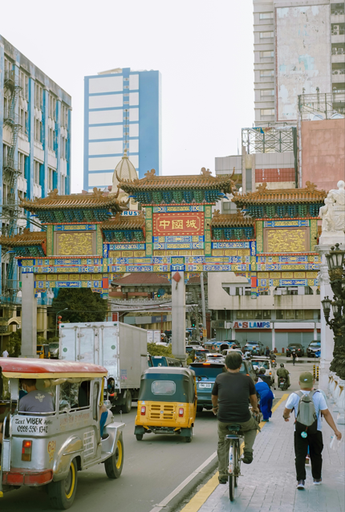

Manila
14.941.953 Resident
Philippines
14,5995°N, 120,9842°E
Get More Information
Manila
View all citiesThe Philippines, officially known as the Republic of the Philippines, is an archipelagic country in Southeast Asia. Located in the western Pacific Ocean, it consists of 7,641 islands, with a total area of roughly 300,000 square kilometers, which are broadly categorized in three main geographical divisions from north to south: Luzon, Visayas, and Mindanao.
Images Credit
Bandung
Asia Africa
City Network
Quick Link
Get in touch
Need Information?
+62 81318667479
bapperida@bandung.go.id
© BAACN - All rights reserved